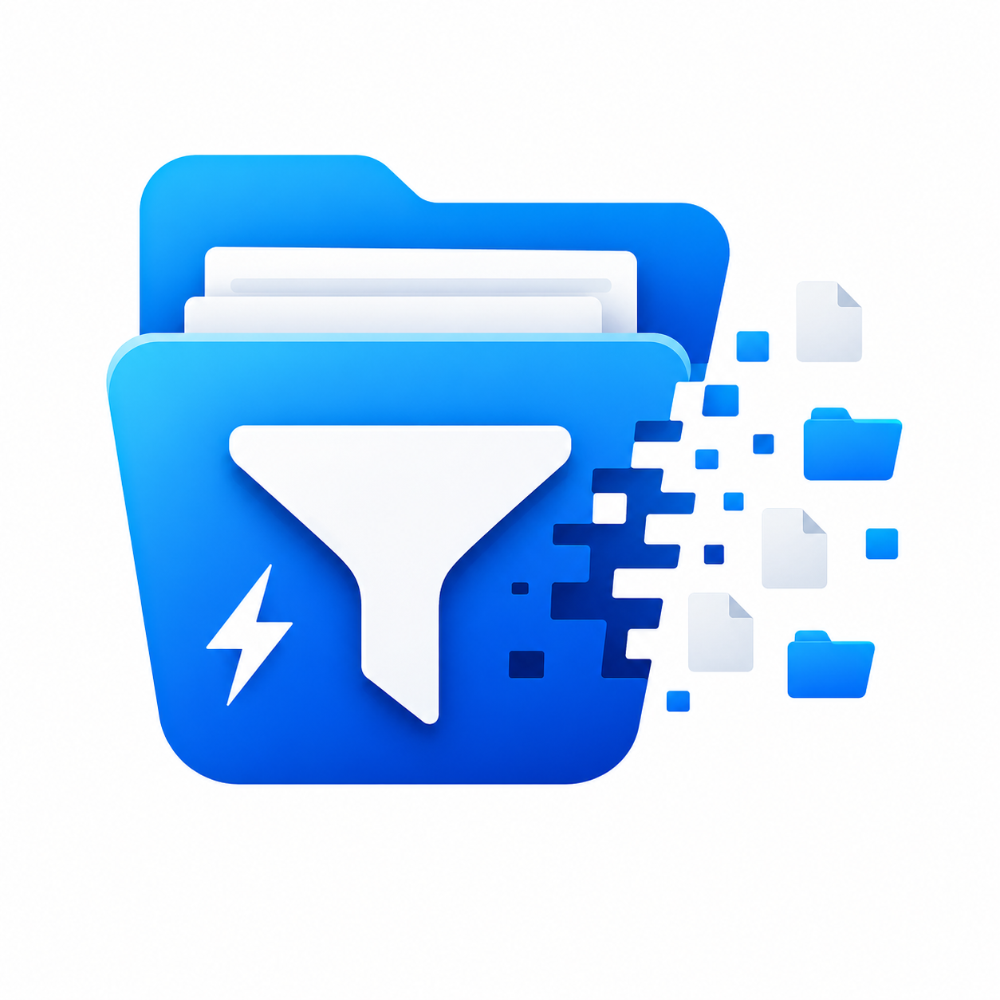

Automatically exclude unwanted files and folders during project transfers using .ignore rules. Inspired by the simplicity of .gitignore, built for developers who want cleaner, faster and smarter project sharing.
Download Setup Extractor Why IgnoreModern projects often contain thousands of unnecessary files such as caches, build outputs, dependencies and temporary artifacts. These files increase transfer times, upload sizes and storage usage.
Ignore automatically excludes those files using simple .ignore rules, allowing you to transfer only what actually matters.
Create a .ignore file with gitignore-style rules, or copy your existing .gitignore content into it for project-specific cleanup.
# Ignore project dependencies and build output node_modules/ vendor/ dist/ build/ .next/ .git/ .env .env.local *.log *.tmp *.cache *.bak